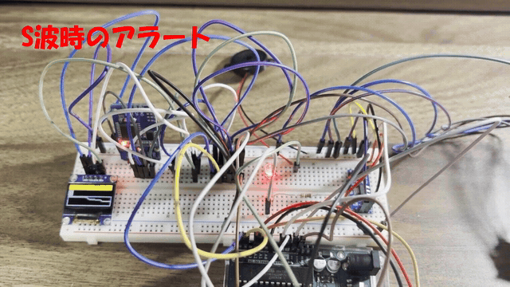

概要
Arduino Unoを中心に、3軸加速度センサー・OLEDディスプレイ・圧電ブザー・警告LED・RTC・ESP-01S(WiFiモジュール)を組み合わせた装置です。揺れを検知すると、本体の音と表示で警告するだけでなく、WiFi経由でスマートフォンにプッシュ通知を送ります。
| マイコン | Arduino Uno |
| 開発形態 | 個人開発 |
| 主なパーツ | 3軸加速度センサー、OLEDディスプレイ、圧電ブザー、警告LED、RTC、ESP-01S、ロジックレベルシフタ、3.3V電源モジュール |
構成図
データの流れに沿って、部品が順に光ります。
回路図
3D の部品を読み込んでいます
- 電源
- アナログ
- デジタル
- シリアル・USB
製作した装置の写真にもとづく、部品どうしのつながりです（ピン番号は省略しています）。ESP-01S は 3.3V で動くため、専用の電源モジュールから給電し、Arduino（5V）との信号はロジックレベルシフターを通します。
揺れの計測とキャリブレーション
3軸加速度センサーの生値には個体差があるため、ゼロ点オフセットと感度をコード上で補正したうえで、揺れの大きさ(shakeMagnitude)を継続的に算出しています。算出した値はOLEDに波形履歴として表示し、直近の揺れの推移をひと目で確認できます。
画面を見なくても伝わる、2段階の警戒レベル
揺れの大きさに応じて警戒状態(alertState)を2段階で切り替え、レベルごとにブザーの鳴動間隔と音程を変えています。警戒度が上がるほど間隔は短く、音程も変わるため、画面を見なくても危険度が直感的に伝わります。
WiFi経由のプッシュ通知
検知信号はソフトウェアシリアルでESP-01Sに送られ、ESP-01SがWiFiに接続してTelegram Bot APIへHTTPリクエストを送信します。スマートフォンには「地震速報アラート ― P-WAVE DETECTED」という通知が届きます。
5V系のArduinoと3.3V系のESP-01Sの間にはロジックレベルシフタと3.3V電源モジュールを入れ、電圧の違いを吸収しています。WiFiやBotの認証情報はcredentials.hに分離し、ロジックと切り離して管理しています。
- 3軸加速度センサーのキャリブレーションと、揺れ量のリアルタイム算出
- OLEDディスプレイへの波形履歴表示
- 2段階の警戒レベルに応じたブザーの間隔・音程制御
- ESP-01S経由でTelegramへプッシュ通知を送信